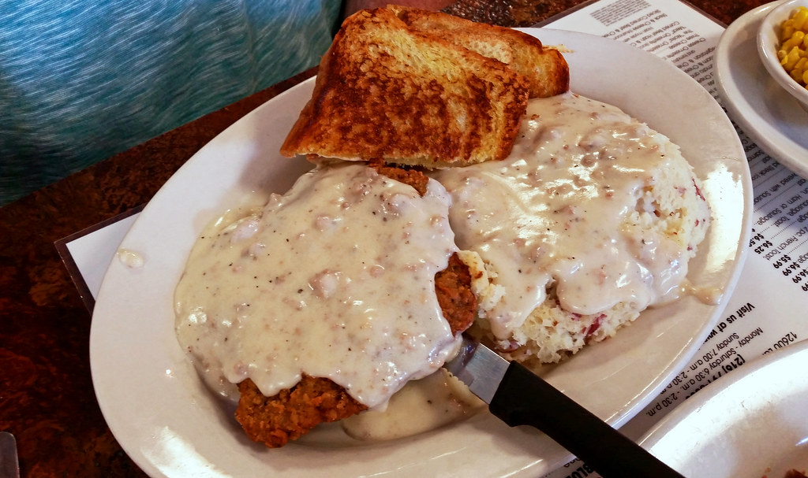

Country-Fried Steak

Description
Now you can have Cracker Barrel whenever you want! Goes great with white country gravy and buttery toast, as shown in the image above.
Ingredients
- 1/4 cup milk
- 1 egg
- 1 cup all-purpose flour
- 1 4-ounce packet saltine crackers, crushed
- 1 and 1/2 teaspoons seasoned salt
- 1 and 1/2 teaspoons onion powder
- 1 and 1/2 teaspoons garlic powder
- 1 and 1/2 teaspoons Montreal steak seasoning
- 4 4-ounce cube steaks
- 2 tablespoons vegetable oil
Directions
- Whisk milk and egg together in a shallow bowl; set aside. Whisk flour, crushed saltines, seasoned salt, onion powder, garlic powder, and steak seasoning together in a separate shallow bowl; set aside.
- Dip 1 steak into egg mixture. Lift up so excess mixture drips back into the bowl. Press into flour mixture, patting into steak to coat completely. Place coated steak, unstacked onto a plate. Repeat with remaining 3 steaks.
- Heat oil in a large skillet over medium-high heat. Carefully add steaks; fry until golden brown, firm, hot in the center, and just turning from pink to grey, about 4 minutes per side. An instant-read thermometer inserted into centers should read 160 degrees F (70 degrees C).
Home